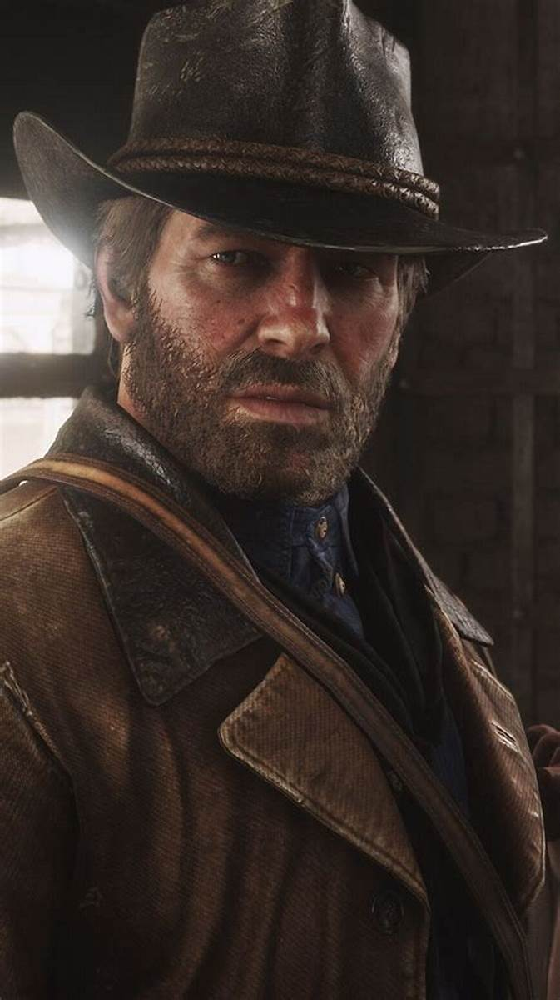

ㅤㅤㅤㅤㅤㅤㅤㅤㅤㅤㅤㅤㅤㅤARTHUR MORGANㅤㅤㅤㅤㅤㅤㅤㅤㅤㅤㅤㅤㅤㅤㅤㅤㅤㅤㅤ Arthur se juntou a gangue Van der Linde aos catorze anos, tendo perdido seu pais ainda jovem, e logo se tornou o primeiro protegido de Dutch. Arthur teve um filho, Isaac, com uma garçonete chamada Eliza; ele demonstrou apoio regular a eles até que foram mortos por ladrões. Com o tempo, Arthur se transformou no executor mais dedicado de Dutch.ㅤㅤㅤㅤㅤㅤㅤㅤㅤㅤㅤㅤQuando um assalto de balsa malsucedido os deixa sem escolha a não ser fugir pelas montanhas, Arthur ajuda a encontrar suprimentos e depois rastreia o colega de gangue John Marston. Ele ajuda a roubar um trem de propriedade do magnata, Leviticus Cornwall. Arthur se envolve em um conflito entre duas famílias sulistas em guerra, os Braithwaites e os Grays, levando à captura do filho de John, Jack. Arthur recupera Jack da supervisão do senhor do crime Angelo Bronte e ajuda a retaliar contra Bronte depois que ele os conduziu a uma armadilha. Depois que Bronte é capturado, Dutch o afoga; Arthur percebe a explosão violenta de Dutch como algo atípico dele. Em Saint Denis, um assalto a banco fracassado força alguns membros do grupo a sair da cidade; Arthur náufraga com os outros em Guarma, uma ilha próxima de Cuba, e batalha ao lado de um revolucionário em troca de um navio de volta ao continente. Reunindo-se com o resto, Arthur resolve salvar John, agora capturado, para a desaprovação de Dutch. Pouco depois, Arthur adormece e desmaia, caindo do cavalo. Depois de visitar um médico, ele é diagnosticado com tuberculose. Chocado com a sombria realidade da morte eminente, ele começa a refletir sobre decisões e moral. Isso impulsiona seu desejo de proteger os remanescentes da gangue, principalmente John e sua família. Ao salvar John da prisão, Arthur revela suas dúvidas sobre Dutch, incapaz de aceitar as crescentes obsessões de seu líder.Dutch aparentemente abandona Arthur durante um ataque a uma refinaria de petróleo e deixa John para morrer quando ele é baleado durante um assalto a um trem. Quando Dutch ignora o pedido de Arthur para resgatar a esposa de John, Abigail, Arthur repuldia a gangue. Ao confrontá-los, Arthur descobre que Micah Bell está traindo a gangue ao agir como informante dos Pinkertons. Ele retorna a Dutch para informá-lo sobre isso, mas Dutch se volta contra Arthur e o recém-retornado John. Enquanto os Pinkertons invadem o acampamento, Arthur e John fogem. Arthur implora a John para voltar para sua família. Nesse momento o jogador deve fazer uma escolha na historia, se Arthur ajuda John a fugir, ou se volta para buscar o dinheiro da gangue. Na primeira escolha, ele logo é emboscado pelo vingativo Micah, e Dutch intervém. Arthur convence Dutch a abandonar Micah e ir embora. Se o jogador tiver grande honra, Arthur sucumbe aos seus ferimentos e doença, morrendo pacificamente enquanto observa o nascer do sol; com pouca honra, Micah o executa. Na escolha de voltar ao acampamento para recuperar o dinheiro, ele é emboscado por Micah, e em seguida começam uma luta utilizando facas, se o jogador tem uma honra alta, ele consegue esfaquear o olho de Micah, e em seguida morre em decorrência da tuberculose e dos ferimentos, e no caso do jogador ter uma honra baixa, ele é morto esfaqueado por Micah. Em ambos os casos o papel de Dutch não se diferencia da primeira escolha. Posteriormente, Charles Smith retorna, e faz um tumulo para Arthur.